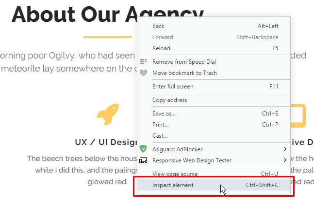

Allura HTML Template
template documentation version 1.0
Table of Content
- Item Name : Allura HTML Template
- Item Version : Version 1.0
- Created : July 04 2017
- Author by : starcade
- Support via Email : nebo8002@gmail.com
Thank you for purchasing my theme. If you have any questions that are beyond the scope of this help file, please feel free to email me via my user page contact form here. Thanks so much!
Customizing Allura website template is easy even if you have very little or even no coding experience at all. Follow instructions in this help file to edit or add new content. I will try to explain how to do it as if you have no coding experience.
Getting Started #back to top
HTML Structure
Template is using a standard HTML structure. Header with navigation and a menu (for smaller devices) is at the top. Content split into sections is in the middle and a footer at the bottom. Template is using bootstrap framework so editing or adding new content should be very easy.
Notable id's and classes
- .super_container - Container div for all content.
- .fs_menu_container - Full screen menu behind the hamburger icon. Shows only on smaller devices.
- .home_background - Home background image with parallax effect.
- .home_background_overlay - Overlay for the home background image. Adds blue to transparent gradient over the image.
- .round_button - Button that plays a video. Currently is set to play vimeo but it can be changed to several other services. Check the documentation for magnificPopup.
- .contact-form - A working contact form. It is set to use gmail account for sending. More about it later.
- .subscribe-form - A working subscribe form. It is set to use gmail account for sending. More about it later.
Easiest way to edit any part of the page is to open the template in your browser, right click on any element you wish to edit and select inspect element. There you can see which classes / id's are applied to that element. Then open the css file (main_styles.css) and search for those classes / id's. Then just edit the element in any way you see fit.

As you can see from the image above "About Our Agency" is a header (h2) and it has an id #about_us_title. That id has several rules applied to it like display: inline-block; and position: relative;. Let's say you want to change the color of that header to red. You would open main_styles.css and do a search for #about_us_title id. Or you can look at your browsers elements tab where it says exactly what file and at what exact line you can find this id. When you found the id in main_styles.css add a new rule to it. Position your cursor behind the last rule in this id, which is float: right; and create a new line. Now type in color: red;. Voila! You changed the color of your heading.
In the next section i will include links to several videos that can teach you more about CSS.

CSS Files and Structure#back to top
I'm using two CSS files in this template, main_styles.css and responsive.css. Both can be found in the styles folder. main_styles.css is where all of the styling takes place and responsive.css is where i put all of the code for the responsive behaviour of the template. So if you're looking for the code for template behaviour on certain device size this is where you find it. Plugins are using their own styling and those CSS files can be found in the plugins folder.
On the top of the CSS file you can find a color palette used in the project and the Table of Contents that lists important parts of the CSS file. It's in the following format:
/****************************** COLOR PALETTE #252839 - Background Color #292c3f - Background Lighter #191d33 - Background Darker #F7F7F7 - Font Color Light #677077 - Dark Details #b5b5b7 - Medium Details #f2b632 - Yellow [Table of Contents] 1. Fonts 2. Body and some general stuff 3. Home 3.1 Header ... ******************************/
You can see more about CSS in the linked videos. Also w3schools has a ton of guides and tutorials on the subject.
JavaScript #back to top
This theme imports several JavaScript and/or jQuery files. My custom code is placed in a custom.js file. Plugins are using their own JavaScript/jQuery files and they are located either in the js folder, same as custom.js, or in their respective plugin folders. Plugins will be listed in the next section.
- jQuery (js/jquery-3.1.1.min.js)
- My custom scripts (js/custom.js)
- jQuery is a Javascript library that greatly reduces the amount of code that you must write. Version included is 3.1.1. Latest version can be found here
- My custom scripts is where all of the initialization of other plugins takes place. Also some custom scripts for the template functionality. Code is pretty simple and commented where needed.
Editing template #back to top
Changing home background
Home background image is set in the CSS file (main_styles.css). Look for the .home_background class and change the path to your desired image. CSS background-image is in this case only used as a fallback. You need to change the path to the image for the parallax image. Open your custom.js file and search for 4. Initialize Parallax. Couple of lines below you can change the path for the home_background.jpg. If you want to remove the blue-to-transparent gradient overlaying the home background image you can just delete or comment out the div with a class home_background_overlay in the index.html file.
Adding more skills in the About us section
To add more skills all you have to do is duplicate skills already there and edit the values.
So if you were to add another skill, skill 5, it would look like this:
After you inserted the skill into the HTML file, open main_styles.css file and search for .skill_bar_4. After the closing bracket of the .skill_bar_4 class make a new line and enter the following:
.skill_bar_5
{
width: x%;
}
... where "x%" will be your desired percentage. After that you will either need to readjust the scale behind the bars or readjust the margin between the bars so they all fit in the scale.
Necessary Plugins #back to top
TweenMax
TweenMax is a GreenSock Animation Platform, a JavaScript library for HTML5 animation.
Owl Carousel 2
Owl Carousel 2 is a touch enabled jQuery plugin that lets you create a beautiful responsive carousel slider.
morphext
morphext is a simple, high-performance and cross-browser jQuery rotating / carousel plugin for text phrases powered by Animate.css.
Ionicons
Ionicons gives you scalable vector icons that can instantly be customized — size, color, drop shadow, and anything that can be done with the power of CSS.
Magnific Popup
Magnific Popup is a responsive lightbox & dialog script with focus on performance and providing best experience for user with any device (for jQuery or Zepto.js).
ScrollMagic
ScrollMagic helps you to easily react to the user's current scroll position. It's the perfect library for you, if you want to ...
ScrollTo
ScrollTo An article about animated scrolling with jQuery inspired me to make a small, customizable plugin for scrolling elements, or the window itself.
Parallax
Parallax is a dirt simple parallax scrolling effect inspired by Spotify.com and implemented as a jQuery plugin.
PHPMailer
PHPMailer is a full-featured email creation and transfer class for PHP
Support Desk #back to top
Please remember you have purchased a very affordable theme and you have not paid for a full-time web design agency. Occasionally we will help with small tweaks, but these requests will be put on a lower priority due to their nature. Support is also 100% optional and we provide it for your connivence, so please be patient, polite and respectful.
Please visit our profile page or ask question @nebo8002@gmail.com
Support for my items includes:- * Responding to questions or problems regarding the item and its features
- * Fixing bugs and reported issues
- * Providing updates to ensure compatibility with new software versions
- * Customization and installation services
- * Support for third party software and plug-ins
- * Make sure your question is a valid Theme Issue and not a customization request.
- * Make sure you have read through the documentation and any related video guides before asking support on how to accomplish a task.
- * Make sure to double check the theme FAQs.
- * Try disabling any active plugins to make sure there isn't a conflict with a plugin. And if there is this way you can let us know.
- * If you have customized your theme and now have an issue, back-track to make sure you didn't make a mistake. If you have made changes and can't find the issue, please provide us with your changelog.
- * Almost 80% of the time we find that the solution to people's issues can be solved with a simple "Google Search". You might want to try that before seeking support. You might be able to fix the issue yourself much quicker than we can respond to your request.
- * Make sure to state the name of the theme you are having issues with when requesting support via ThemeForest.
Files, Sources & Credits#back to top
These are the primary CSS files used for general front-end styling. Use these to customize your theme even further.
- 1. main_styles.css - Primary stylesheet
- 2. responsive.css - Responsive behaviour
- 3. bootstrap.css - Bootstrap styles
- 4. owl.carousel.css - OWL Carousel
- 5. ionicons.css - Ionicons Icons stylesheet
- 7. owl.theme.default.min.css - OWL Carousel css file
- 8. morphext.css - Morphext text rotator styles
- 9. magnific-popup.css - Magnific popup styles
- 10. animate.css - Animate CSS plugin styles
These are the various attribution links to the Javascript files included or modified to work with in this theme.
- 1. jquery-3.1.1.min.js - Base JavaScript
- 2. bootstrap.js - Bootstrap js file
- 3. custom.js - Custom JavaScript file
- 4. owl.carousel.js - Owl Carousel JavaScript
- 5. owl.animate.js - Owl Carousel JavaScript
- 6. TweenMax.min.js - TweenMax JavaScript
- 7. animation.gsap.min.js - GSAP js file
- 8. ScrollToPlugin.min.js - GSAP js file
- 9. TimelineMax.min.js - GSAP js file
- 10. easing.js - Easing plugin
- 11. parallax.js - Parallax js file
- 12. jquery.magnific-popup.min.js - Magnific Popup js file
- 13. zoom.js - Magnific Popup js file
- 14. ScrollMagic.min.js - Scrollmagic js file
- 15. jquery.scrollTo.min.js - ScrollTo js file
- 16. contact.js - Contact form js file
- 17. subscribe.js - Subscribe form js file
- 1. contact.php - Contact form PHP file. Handles the sending of the contact form information using the gmail account.
- 2. subscribe.php - Subscribe form PHP file. Handles the sending of the subscribe form information using the gmail account.